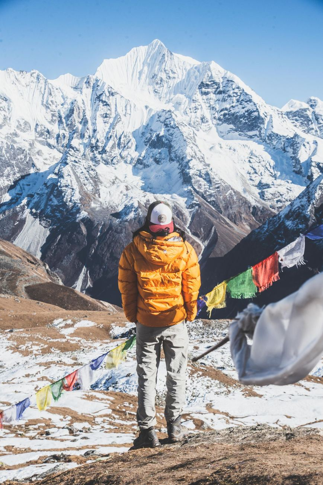

Visual storytelling & trail keepsakes
- Cinematic trail storiesIncluded with every trek
Instead of rushed phone snapshots, I capture smooth, stabilized video reels and natural, high-resolution portraits of you against sweeping Himalayan backdrops — delivering an edited highlight film at the end of our journey so you can stay present in the moment.
- Your personal Himalayan trail logIncluded with every trek
Receive a custom digital memory book after your trek, mapping out our exact daily elevation gains, GPS routes, peak names you stood before, and candid moments from the trail.